忙完了一阵，是时候出来浪一波了。
在Austin ARM实习的Eason学长表示你来我这有地方住，瞬间感觉不去亏了一个亿，果断订了机票，拎包就走。
对于我这种在东北读了本科，加拿大呆了三年（从此觉得-20℃是人体最适温度），洛矶山脉脚下呆了半年（我们有世界闻名的滑雪场(们）和The greatest snow on earth)的人来说，德州给人的第一印象就是热，贼热，非常热，简直要化了，不想在室外多呆一秒的那种热。不过据说我来的这几天其实还不算热（有个白人老太跟我讲“现在这个天气跟热一点都沾不上边")，很多时候天上都飘着云彩，也不算晒，可以说是十分幸运了。人可能不会喜欢这么热的天气，但是作物和植被可开心坏了。我在德州吃到了心心念甜甜的大西瓜，同样又大又甜的车厘子，在Austin高架桥上开车两边是茫茫的树海，瞄一眼GPS发现居然是在市里面。
另一个印象是大。食︰大口吃肉大碗喝酒;住:德州最不缺的就是地;行︰车位大，车道宽，皮卡满街跑，大家开车都不看限速（我学长表示这条路有限速的?我从来没看到有人注意过限速);衣:美国人的整体版型要比亚洲人大好多圈，大概德州人的衣服还要在这个基础上再加两圈吧。
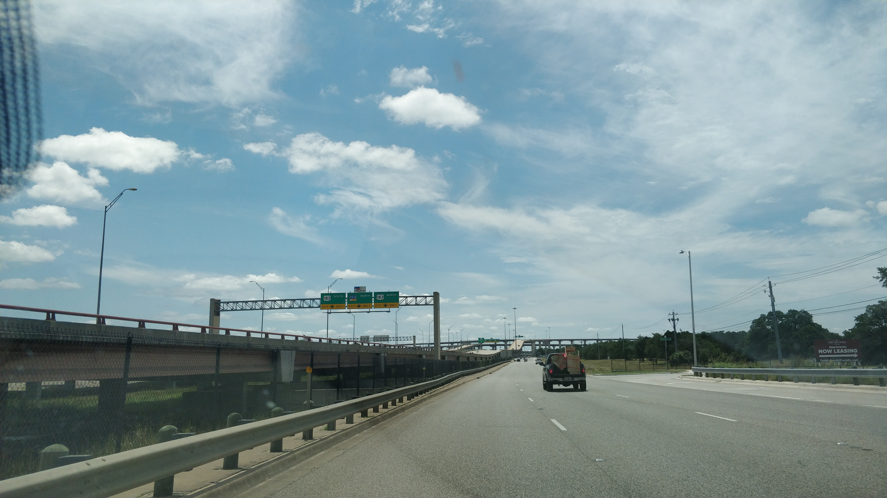
上图是Austin的N层高速立交桥，据说Houston的高速更丧心病狂。被这种蛋疼的设计坑了无数次的我到现在也没有理解为什么会有最左边车道开着开着忽然成了调头专用道这种设定。如果说这个还好，那么开着开着忽然无缝衔接开到了收费路段就更让人无语了。因为德州的油价非常便宜（差不多是加州的1/2，其实看一个地方油贵不贵很简单，比如你看加州有很多普锐斯，盐湖城有很多特斯拉，而我在德州呆了几天一辆混动/纯电都没能见到，说明啥?说明我穷，买不起普锐斯，也买不起特斯拉)，所以德州有很多收费路段。老司机可以在只走Interstate (免费）的情况下到达目的地，而我，并不能。
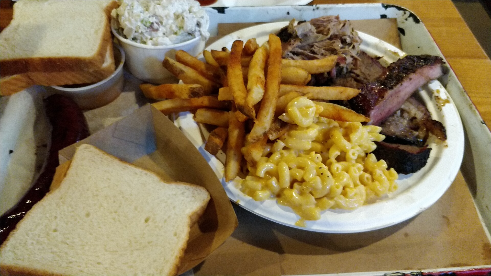
上图是在德州吃的grill，德州人民对“吃肉”的理解是，吃，排队打饭，打完饭自己去找座位吃，我们没时间伺候你（在美国吃过饭的小伙伴知道美国的服务员几分钟跑来一趟像雷总耍猴一样问你are you OK
无非是要你多给点小费，在德州很多餐厅跟食堂一样，是没有服务员的);肉，你要吃肉我们就只给你肉，绝不会用菜把盘子装饰一下。这种grill店基本是人手一瓶啤酒，德州人民对酒的狂热是显而易见的，导致了模样“大概"是成年人的话买酒基本没有人会查你的身份证（对比一下犹他州，不带身份证连酒铺都进不去)。当然，酒驾是不对的，开车还是要注意安全_(.-.)-
Austin其实是一个很美的城市，坐落在Austin downtown的UT Austin建筑风格也十分统一。
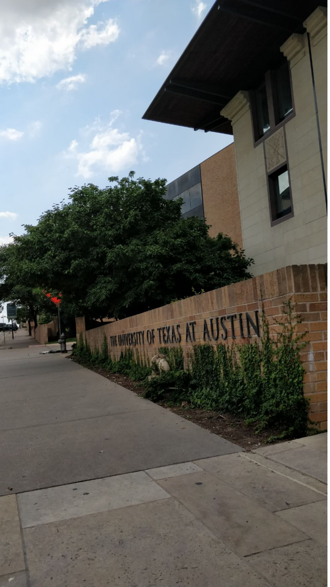
如果要找更加有风格的城市可以去San Antonio，从进城的高速路开始就被刷成了橘红色(嗯看起来人家真的有钱)。
这样的土地养育了一群生性豪爽放荡不羁的人民。德州人民的反骨是出了名的，下面这张是Texas Capitol的正面，孤星旗高高飘扬，而美国国旗在这栋楼的背面。顺便提一下Texas Capitol是免费参观的，里面还有人免费带逛，非常值得一去。
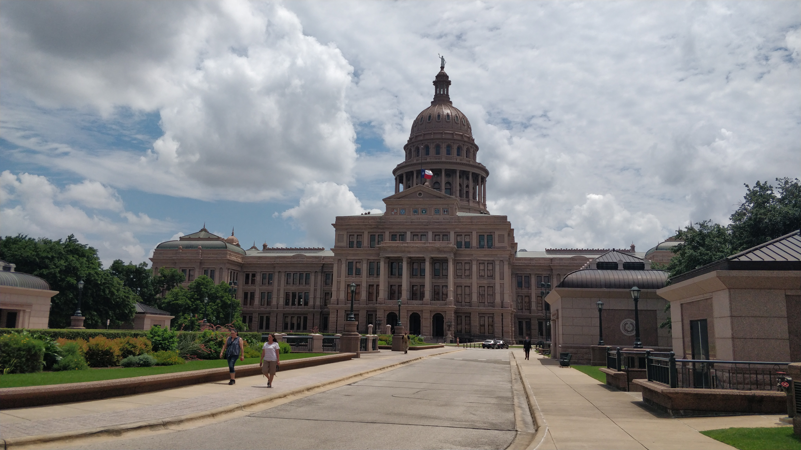
下图为Texas Capitol内景。
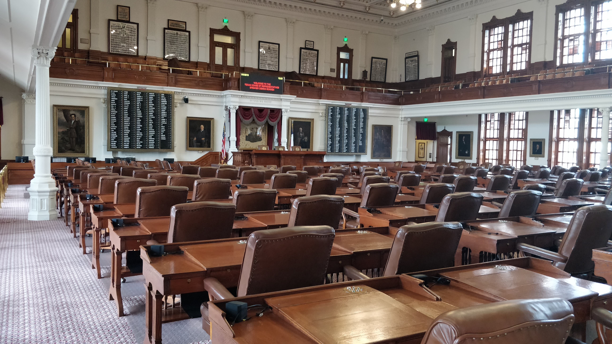
议会大厦顶端是德州的女神像，女神手里拿的是德州的象征――lone star。据说这个女神像比美国首都DC那个女神像还高了一头。我好奇地问讲解员联邦政府觉得你们搞这个东西比联邦的那个还高真的OK吗?那小姑娘朗声说道"We don’t care"然后小声跟我讲“Although l shouldn’t say this……“E德州的这种反叛的精神根植于德州人民的血液中。其实了解一下德州的历史大概不难察觉一二。如果要了解德州的历史，座落在UT Austin旁边的Texas State Museum是一个不错的去处。
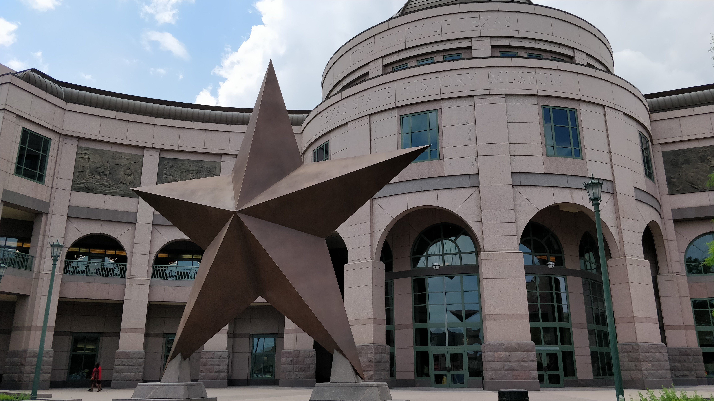
我在这里参观的时候遇到了一位白人老太太，老太太非常自豪地对我这个明显的外国人说“We’re the only state who wants to become a nation.”
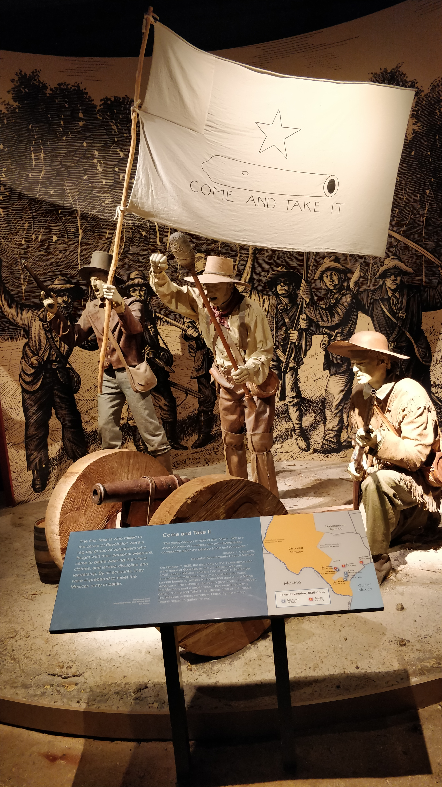
Alamo战役的一声炮响揭开了德州独立运动的篇章。事情的根本原因是墨西哥政府觉得德州人民越来越不听话，盎格鲁人越来越多，北边还有虎视眈眈的美国，怕这瓢肥水会流入外人田，于是决定给他们一点人生的经验。事情的导火索是墨政府想要收回驻扎在德州的一挺重炮，然而德州人民表示借出去的炮就是泼出去的水，Libertyor death,打，奉陪到底,谈，谈你妈b。独立战争只打了7个月就让墨政府疲于奔命，不得不承认现在的德州已经不是他们能控制得了的了,于是德州人民建立了自己的国家，名为Republic of Texas。不过德州人民的危机意识非常强，虽然建立了自己的国家，但是北边是想要继续扩张的美国(美国人一直觉得作为天选之国，自己的国境线应该从美洲大陆的西海岸一直延伸到东海岸。你说北边?加拿大那块能把人J冻掉的地方是给地球人住的?美洲大陆保皇党们觉得美国人都是傻屌,这地方怎么就不好了，于是这些人成了后来的Canadian) ,南边是失去颜面哪里甘心的墨西哥（毕竟西班牙也曾是帝国，西裔们哪里受得了这种委屈)，要在两个大国的夹缝中间生存何谈容易。当时的美国国内针对是否接纳德州加入联邦也有两派势力，不过最后经过（此处省略一万字，因为那段历史我没看)以后，德州人民经过还是公投加入了联邦，成为了美利坚合众国的一部分。现在的德州早已不是当年那个德州，名企林立经济繁荣人民安居乐业，几乎成为了美国的榜样。由于德州加入联邦是投票决定的，德州人民有一种当年加入联邦是迫不得已，现在特别想独立出来的情结。现在打开谷歌,搜索Republic of Texas，你会找到一个“德克萨斯共和国政府”的“官方网站"。我琢磨了好久发现这并不是一个愚人节玩笑因为我在参观德州议会的时候发现他们的档案馆是这样的
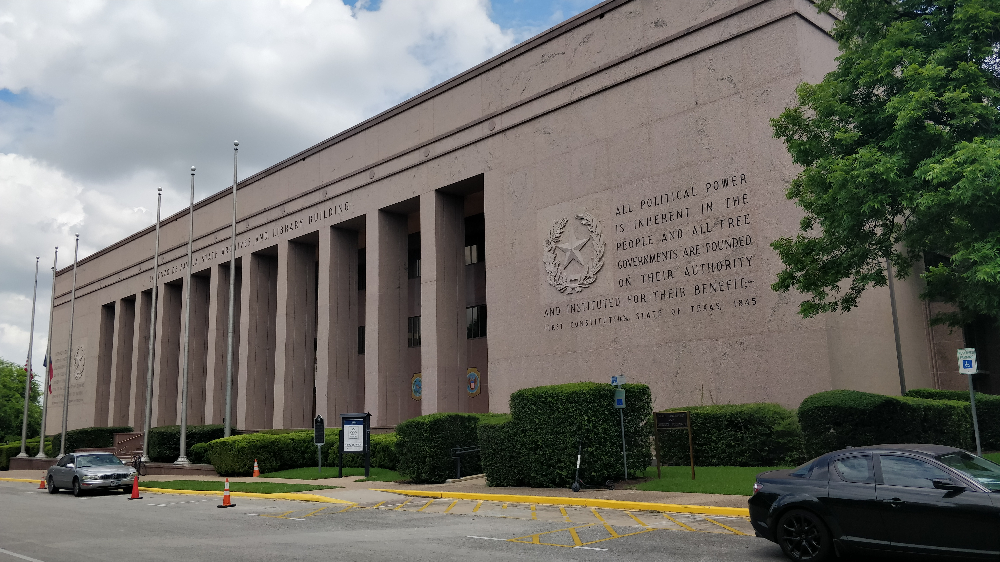
下面那行字是"The Republic of Texas"提醒人们我们曾经是一个国家，一切权利属于人民。如果联邦把我们惹毛了，我们就嘿嘿嘿。
当然上面那段历史是我根据博物馆的记载添油加醋了一番，不要太当真。
现在的德州是美国最具潜力的几个州之一，很多加州白领苦于宇宙中心夸张的房价和生活成本向东南方向迁移(大概是习惯了四季如春的加州很难再回到冰天雪地的地方了)。德州因为相对便宜的房价，越来越多的高科技企业的入驻，没有州个人所得税（这个巨大的福利吸引了好多加州的纸面（税前)富翁)，低廉的生活成本而成为了他们的重要选择之一。
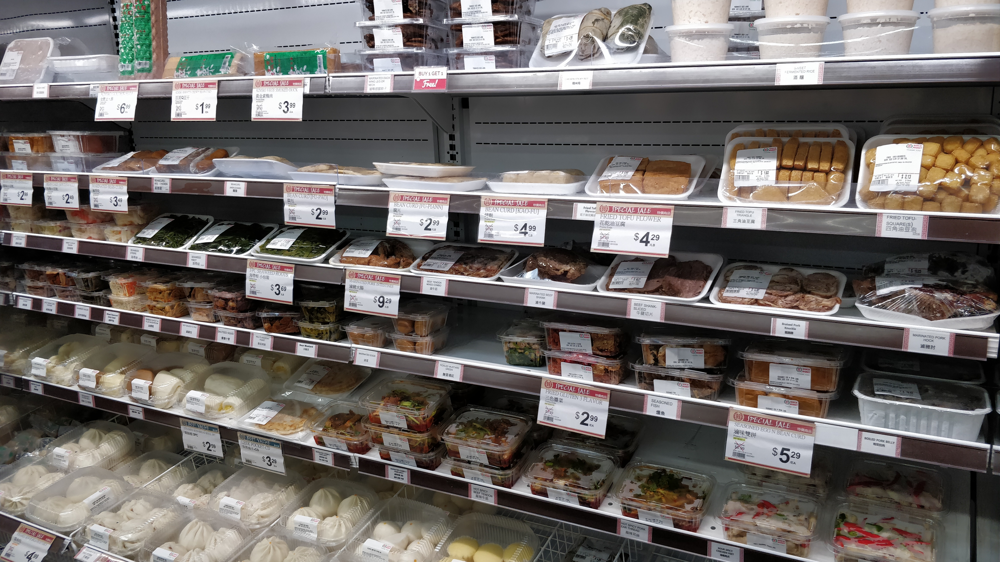
作为一个中国人能在Austin见到大华超市,吃到卤味拼盘和脆皮烤鸭可以说是非常幸福了。硅谷的中产阶级大多会重视孩子的教育，而德州的旗舰大学UT Austin更是有能媲美常青藤大学的实力。
如果想吃，Houston是一个绝佳的满足各种老饕刁钻胃口的地方。如果想玩，Austin向北有个挺大的溶洞叫Inner Space Cavern,看完这个我觉得皖南那个花山谜窟是不是人造用来坑钱的
San Antonio有世界著名的六旗公园和各种游乐场，过山车让你坐到无聊为止。
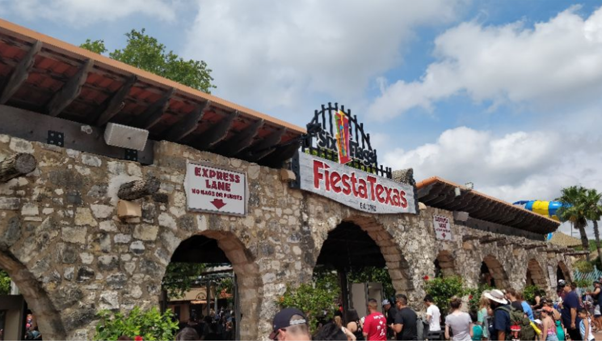
(德州六旗最刺激的过山车应该是Iron Rattler，排队的人不是特别多，建议不要错过，并且强烈建议全程双臂张开，不要扶保险杠,体验极佳——嗯听说如果再张开双手那是摸G奶的感觉，没体验过的可以体验一下……)
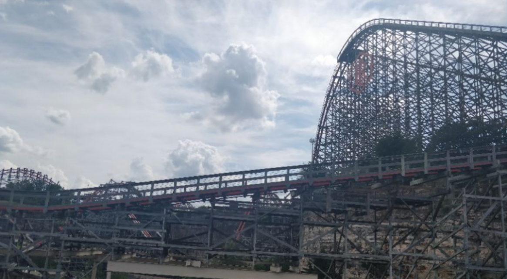
刷遍了德州六旗最刺激的过山车们以后我特别想体验新泽西六旗的Kingda Ka过山车，至今还没有找到人愿意(敢)一起去，有意向的老铁欢迎联系我。
嗯是时候回村里继续搬砖了，苦逼夏天它lei了lei了B
Adios Tejas!
wxgopher@AUS airport
Austin,The Republic of Texas
最后修改于 2019-05-01